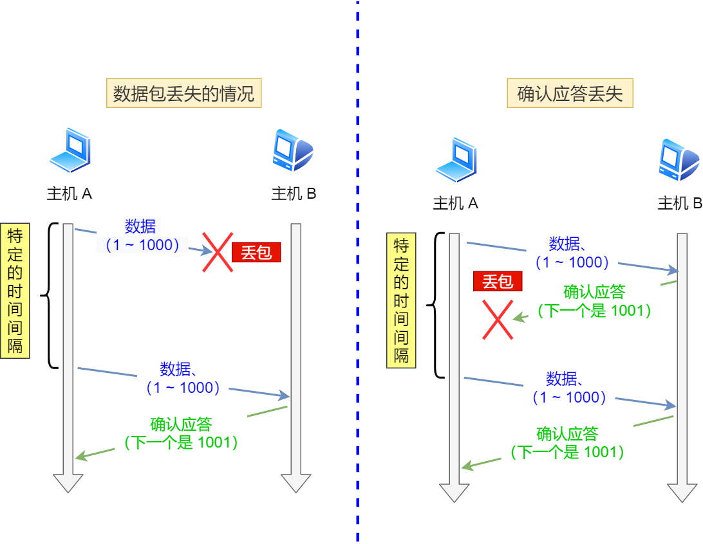
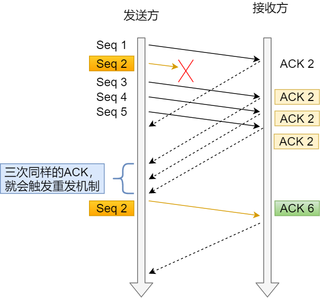
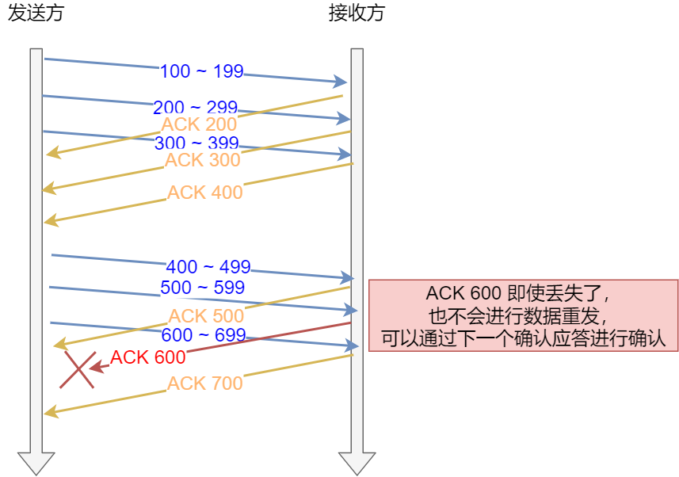
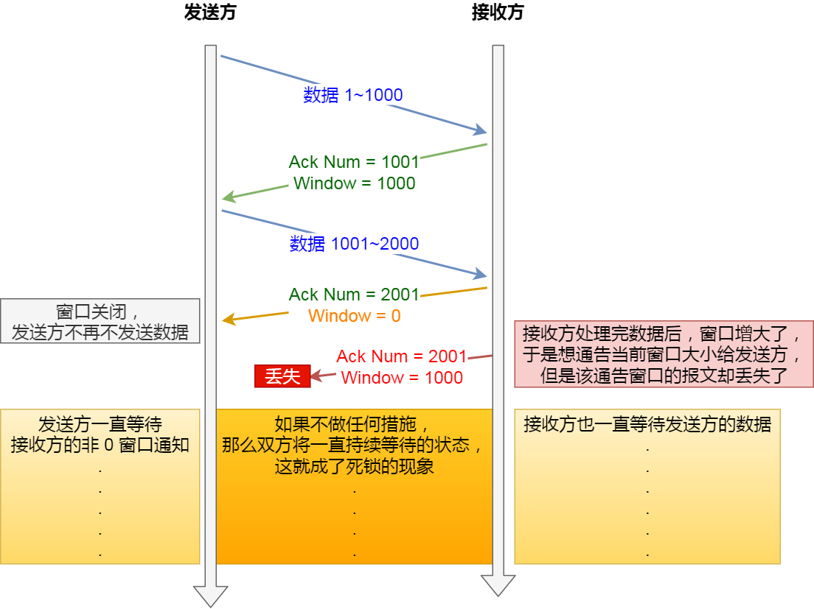

<!DOCTYPE html>


<html lang="zh-CN">


<head>
  <meta charset="utf-8" />
    
  <meta name="viewport" content="width=device-width, initial-scale=1, maximum-scale=1" />
  <title>
    TCP —— 重传机制、流量控制、拥塞控制 |  JsyBlog
  </title>
  <meta name="generator" content="hexo-theme-ayer">
  
  <link rel="shortcut icon" href="/images/ayer.png" />
  
  
<link rel="stylesheet" href="/dist/main.css">

  <link rel="stylesheet" href="https://cdn.jsdelivr.net/gh/Shen-Yu/cdn/css/remixicon.min.css">
  
<link rel="stylesheet" href="/css/custom.css">

  
  <script src="https://cdn.jsdelivr.net/npm/pace-js@1.0.2/pace.min.js"></script>
  
  

  

</head>

</html>

<body>
  <div id="app">
    
      
      <canvas width="1777" height="841"
        style="position: fixed; left: 0px; top: 0px; z-index: 99999; pointer-events: none;"></canvas>
      
    <main class="content on">
      <section class="outer">
  <article
  id="post-TCP-2"
  class="article article-type-post"
  itemscope
  itemprop="blogPost"
  data-scroll-reveal
>
  <div class="article-inner">
    
    <header class="article-header">
       
<h1 class="article-title sea-center" style="border-left:0" itemprop="name">
  TCP —— 重传机制、流量控制、拥塞控制
</h1>
 

    </header>
     
    <div class="article-meta">
      <a href="/2021/12/03/TCP-2/" class="article-date">
  <time datetime="2021-12-03T00:15:09.000Z" itemprop="datePublished">2021-12-03</time>
</a> 
  <div class="article-category">
    <a class="article-category-link" href="/categories/%E8%AE%A1%E7%AE%97%E6%9C%BA%E7%BD%91%E7%BB%9C/">计算机网络</a>
  </div>
  
<div class="word_count">
    <span class="post-time">
        <span class="post-meta-item-icon">
            <i class="ri-quill-pen-line"></i>
            <span class="post-meta-item-text"> 字数统计:</span>
            <span class="post-count">4.8k</span>
        </span>
    </span>

    <span class="post-time">
        &nbsp; | &nbsp;
        <span class="post-meta-item-icon">
            <i class="ri-book-open-line"></i>
            <span class="post-meta-item-text"> 阅读时长≈</span>
            <span class="post-count">16 分钟</span>
        </span>
    </span>
</div>
 
    </div>
      
    <div class="tocbot"></div>


  
    <div class="article-entry" itemprop="articleBody">
       
  <h2 id="TCP-是如何保证可靠性的"><a href="#TCP-是如何保证可靠性的" class="headerlink" title="TCP 是如何保证可靠性的"></a>TCP 是如何保证可靠性的</h2><ul>
<li>数据分块：应用数据被分割成 TCP 认为最适合发送的数据块。</li>
<li>序列号和确认应答：TCP 给发送的每一个包进行编号，在传输的过程中，每次接收方收到数据后，都会对传输方进行确认应答，即发送 ACK 报文，这个 ACK 报文当中带有对应的确认序列号，告诉发送方成功接收了哪些数据以及下一次的数据从哪里开始发。除此之外，接收方可以根据序列号对数据包进行排序，把有序数据传送给应用层，并丢弃重复的数据。</li>
<li>校验和： TCP 将保持它首部和数据部分的检验和。这是一个端到端的检验和，目的是检测数据在传输过程中的任何变化。如果收到报文段的检验和有差错，TCP 将丢弃这个报文段并且不确认收到此报文段。</li>
<li>流量控制： TCP 连接的双方都有一个固定大小的缓冲空间，发送方发送的数据量不能超过接收端缓冲区的大小。当接收方来不及处理发送方的数据，会提示发送方降低发送的速率，防止产生丢包。TCP 通过滑动窗口协议来支持流量控制机制。</li>
<li>拥塞控制： 当网络某个节点发生拥塞时，减少数据的发送。</li>
<li>ARQ协议： 也是为了实现可靠传输的，它的基本原理就是每发完一个分组就停止发送，等待对方确认。在收到确认后再发下一个分组。</li>
<li>超时重传： 当 TCP 发出一个报文段后，它启动一个定时器，等待目的端确认收到这个报文段。如果超过某个时间还没有收到确认，将重发这个报文段。</li>
</ul>
<h2 id="重传机制"><a href="#重传机制" class="headerlink" title="重传机制"></a>重传机制</h2><p>TCP 实现可靠传输的⽅式之⼀，是通过序列号与确认应答。</p>
<p>在 TCP 中，当发送端的数据到达接收主机时，接收端主机会返回⼀个确认应答消息，表示已收到消息</p>
<p>所以 TCP 针对数据包丢失的情况，会⽤重传机制解决。</p>
<p>接下来说说常⻅的重传机制：</p>
<ul>
<li><p>超时重传</p>
</li>
<li><p>快速重传</p>
</li>
<li><p>SACK</p>
</li>
<li><p>D-SACK</p>
</li>
</ul>
<h3 id="超时重传"><a href="#超时重传" class="headerlink" title="超时重传"></a>超时重传</h3><p>重传机制的其中⼀个⽅式，就是在发送数据时，设定⼀个定时器，当超过指定的时间后，没有收到对⽅的 ACK</p>
<p>确认应答报⽂，就会重发该数据，也就是我们常说的超时重传。</p>
<p>TCP 会在以下两种情况发⽣超时重传：</p>
<ol>
<li><p>数据包丢失</p>
</li>
<li><p>确认应答丢失</p>
</li>
</ol>



<p>RTT （Round-Trip Time 往返时延）</p>
<p>RTT 就是数据从⽹络⼀端传送到另⼀端所需的时间，也就是包的往返时间。</p>
<p>超时重传时间是以 RTO （Retransmission Timeout 超时重传时间）表示。</p>
<p>当超时时间 <strong>RTO</strong> 较⼤时，重发就慢，丢了⽼半天才重发，没有效率，性能差；</p>
<p>当超时时间 <strong>RTO</strong> 较⼩时，会导致可能并没有丢就重发，于是重发的就快，会增加⽹络拥塞，导致更多的超</p>
<p>时，更多的超时导致更多的重发。</p>
<p>所以<strong>精确的测量超时时间 RTO 的值是⾮常重要的</strong>，这可让我们的重传机制更⾼效。</p>
<p>根据上述的两种情况，我们可以得知，<strong>超时重传时间RTO的值应该略⼤于报⽂往返RTT的值</strong>。</p>
<p>实际上「报⽂往返 RTT 的值」是经常变化的，因为我们的⽹络也是时常变化的。也就因为「报⽂往返 RTT 的值」</p>
<p>是经常波动变化的，所以「超时重传时间 RTO 的值」应该是⼀个动态变化的值。</p>
<p>我们来看看 Linux 是如何计算 RTO 的呢？</p>
<p>估计往返时间，通常需要采样以下两个：</p>
<ul>
<li>需要 TCP 通过<strong>采样 RTT 的时间，然后进⾏加权平均，算出⼀个平滑 RTT 的值</strong>，⽽且这个值还是要不断变化</li>
</ul>
<p>的，因为⽹络状况不断地变化。</p>
<ul>
<li>除了采样 RTT，还要采样 <strong>RTT 的波动范围</strong>，这样就避免如果 RTT 有⼀个⼤的波动的话，很难被发现的情况。</li>
</ul>
<p>RFC6289 建议使⽤以下的公式计算 RTO：</p>


<p>如果超时重发的数据，<strong>再次超时的时候，⼜需要重传的时候，TCP 的策略是超时间隔加倍</strong>。</p>
<p>也就是每当遇到⼀次超时重传的时候，都会将下⼀次超时时间间隔设为先前值的两倍。两次超时，就说明⽹络环境差，不宜频繁反复发送。</p>
<h3 id="快速重传"><a href="#快速重传" class="headerlink" title="快速重传"></a>快速重传</h3><p>TCP 还有另外⼀种快速重传（<strong>Fast Retransmit</strong>）机制，它<strong>不以时间为驱动，⽽是以数据驱动重传</strong>。</p>



<blockquote>
<p>在上图，发送⽅发出了 1，2，3，4，5 份数据：</p>
<ol>
<li>第⼀份 Seq1 先送到了，于是就 Ack 回 2；</li>
<li>结果 Seq2 因为某些原因没收到，Seq3 到达了，于是还是 Ack 回 2；</li>
<li>后⾯的 Seq4 和 Seq5 都到了，但还是 Ack 回 2，因为 Seq2 还是没有收到；</li>
<li>发送端收到了三个 <strong>Ack = 2</strong> 的确认，知道了 <strong>Seq2</strong> 还没有收到，就会在定时器过期之前，重传丢失的 <strong>Seq2</strong>。</li>
<li>最后，收到了 Seq2，此时因为 Seq3，Seq4，Seq5 都收到了，于是 Ack 回 6 。</li>
</ol>
</blockquote>
<p>快速重传的⼯作⽅式是<strong>当收到三个相同的 ACK 报⽂时，会在定时器过期之前，重传丢失的报⽂段</strong>。</p>
<h3 id="SACK"><a href="#SACK" class="headerlink" title="SACK"></a>SACK</h3><p>为了解决不知道该重传哪些 TCP 报⽂，于是就有 SACK ⽅法。 <strong>SACK （ Selective Acknowledgment 选择性确认）</strong>。</p>
<p>这种⽅式需要在 TCP 头部「选项」字段⾥加⼀个 SACK 的字段，它可以<strong>将缓存的区间发送给发送⽅，这样发送</strong></p>
<p><strong>⽅就可以知道哪些数据收到了，哪些数据没收到</strong>，知道了这些信息，就可以只重传丢失的数据。</p>
<p></p>
<p>如上图，发送⽅收到了三次同样的 ACK 确认报⽂，于是就会触发快速重发机制，通过 SACK 信息发现只有</p>
<p>200~299 这段数据丢失，则重发时，就只选择了这个 TCP 段进⾏重复。</p>
<h3 id="Duplicate-SACK"><a href="#Duplicate-SACK" class="headerlink" title="Duplicate SACK"></a>Duplicate SACK</h3><p>使⽤了 SACK 来告诉「发送⽅」有哪些数据被重复接收了。</p>
<p>具体的，就是当 ACK大于sack选项的区间时，表明收到了重复的包。</p>
<p>可⻅， D-SACK 有这么⼏个好处：</p>
<ol>
<li><p>可以让「发送⽅」知道，是发出去的包丢了，还是接收⽅回应的 ACK 包丢了;</p>
</li>
<li><p>可以知道是不是「发送⽅」的数据包被⽹络延迟了;</p>
</li>
<li><p>可以知道⽹络中是不是把「发送⽅」的数据包给复制了; </p>
</li>
</ol>
<h2 id="滑动窗口"><a href="#滑动窗口" class="headerlink" title="滑动窗口"></a>滑动窗口</h2><p>停等式发送与接收的方式的缺点是：数据包的往返时间越⻓，通信的效率就越低。</p>
<p>为解决这个问题，TCP 引⼊了窗⼝这个概念。即使在往返时间较⻓的情况下，它也不会降低⽹络通信的效率。</p>
<p>那么有了窗⼝，就可以指定<strong>窗⼝⼤⼩</strong>，窗⼝⼤⼩就是指<strong>⽆需等待确认应答，⽽可以继续发送数据的最⼤值</strong>。</p>
<blockquote>
<p><strong>UDP 为什么是不可靠的？</strong><br>UDP 只有一个 socket 接收缓冲区，没有 socket 发送缓冲区，即只要有数据就发，不管对方是否可以正确接收。而在<strong>对方的 socket 接收缓冲区满了之后，新来的数据报无法进入到 socket 接受缓冲区，此数据报就会被丢弃</strong>，因此 UDP 不能保证数据能够到达目的地，此外，<strong>UDP 也没有流量控制和重传机制</strong>，故UDP的数据传输是不可靠的。</p>
</blockquote>
<h3 id="操作系统缓冲区与滑动窗⼝的关系"><a href="#操作系统缓冲区与滑动窗⼝的关系" class="headerlink" title="操作系统缓冲区与滑动窗⼝的关系"></a>操作系统缓冲区与滑动窗⼝的关系</h3><p><strong>窗⼝的实现实际上是操作系统开辟的⼀个缓存空间</strong>，<strong>发送⽅主机在等到确认应答返回之前，必须在缓冲区中保留已发送的数据</strong>。<strong>如果按期收到确认应答，此时数据就可以从缓存区清除</strong>。</p>
<p>前面我们假定了发送窗⼝和接收窗⼝是不变的，但是实际上，发送窗⼝和接收窗⼝中所存放的字节数，都是放在操作系统内存缓冲区中的，⽽<strong>操作系统的缓冲区，会被操作系统调整</strong>。</p>
<p><strong>当应⽤进程没办法及时读取缓冲区的内容时，也会对我们的缓冲区造成影响</strong>。</p>



<p>图中的 ACK 600 确认应答报⽂丢失，也没关系，因为可以通过下⼀个确认应答进⾏确认，只要发送⽅收到了 ACK</p>
<p>700 确认应答，就意味着 700 之前的所有数据「接收⽅」都收到了。这个模式就叫<strong>累计确认</strong>或者<strong>累计应答</strong>。</p>
<h3 id="窗口大小的协商"><a href="#窗口大小的协商" class="headerlink" title="窗口大小的协商"></a>窗口大小的协商</h3><p>TCP 头⾥有⼀个字段叫 Window ，也就是窗⼝⼤⼩。</p>
<p>这个字段是<strong>接收端告诉发送端⾃⼰还有多少缓冲区可以接收数据</strong>。于是发送端就可以根据这个接收端的处理能⼒来</p>
<p>发送数据，⽽不会导致接收端处理不过来。</p>
<p>所以，<strong>通常窗⼝的⼤⼩是由接收⽅的窗⼝⼤⼩来决定的</strong>。<strong>发送⽅发送的数据⼤⼩不能超过接收⽅的窗⼝⼤⼩，否则接收⽅就⽆法正常接收到数据。</strong>（虽然超过对端的窗口大小导致没有收到ACK，最终也会触发超时重传的，但是会导致网络的拥塞）。</p>
<p><strong>接收窗⼝和发送窗⼝的⼤⼩是相等的吗？</strong></p>
<p>并不是完全相等，接收窗⼝的⼤⼩是约等于发送窗⼝的⼤⼩的。</p>
<p>因为滑动窗⼝并不是⼀成不变的。⽐如，当接收⽅的应⽤进程读取数据的速度⾮常快的话，这样的话接收窗⼝可以</p>
<p>很快的就空缺出来。那么新的接收窗⼝⼤⼩，是通过 TCP 报⽂中的 Windows 字段来告诉发送⽅。那么这个传输过程是存在时延的，所以接收窗⼝和发送窗⼝是约等于的关系。</p>
<h3 id="发送⽅的滑动窗⼝"><a href="#发送⽅的滑动窗⼝" class="headerlink" title="发送⽅的滑动窗⼝"></a>发送⽅的滑动窗⼝</h3><p>我们先来看看发送⽅的窗⼝，下图就是发送⽅缓存的数据，根据处理的情况分成四个部分，其中深蓝⾊⽅框是发送</p>
<p>窗⼝，紫⾊⽅框是可⽤窗⼝：</p>
<p></p>
<ul>
<li>#1 是<strong>已发送并收到 ACK确认</strong>的数据：1~31 字节</li>
<li>#2 是<strong>已发送但未收到 ACK确认</strong>的数据：32~45 字节</li>
<li>#3 是<strong>未发送但总⼤⼩在接收⽅处理范围内</strong>（接收⽅还有空间）：46~51字节</li>
<li>#4 是<strong>未发送但总⼤⼩超过接收⽅处理范围</strong>（接收⽅没有空间）：52字节以后</li>
</ul>
<h3 id="接收⽅的滑动窗⼝"><a href="#接收⽅的滑动窗⼝" class="headerlink" title="接收⽅的滑动窗⼝"></a>接收⽅的滑动窗⼝</h3><p>接下来我们看看接收⽅的窗⼝，接收窗⼝相对简单⼀些，根据处理的情况划分成三个部分：</p>
<p></p>
<ul>
<li>#1 + #2 是<strong>已成功接收并确认的数据</strong>（等待应⽤进程读取）；</li>
<li>#3 是<strong>未收到数据但可以接收的数据；</strong></li>
<li>#4 是<strong>未收到数据并不可以接收的数据</strong>；</li>
</ul>
<h2 id="流量控制"><a href="#流量控制" class="headerlink" title="流量控制"></a>流量控制</h2><p>发送⽅不能没有限制地发数据给接收⽅，要考虑接收⽅处理能⼒。</p>
<p>如果⼀直⽆脑的发数据给对⽅，但对⽅处理不过来，那么就会导致触发重发机制，从⽽导致⽹络流量的⽆端的浪费。</p>
<p>为了解决这种现象发⽣，<strong>TCP</strong> 提供⼀种机制可以<strong>让「发送⽅」根据「接收⽅」的实际接收能⼒控制发送的数据量</strong>，这就是所谓的<strong>流量控制</strong>。</p>
<p>使用滑动窗口来做到流量控制，这部内容在上面已经得到很好的描述了。</p>
<h3 id="窗⼝关闭"><a href="#窗⼝关闭" class="headerlink" title="窗⼝关闭"></a>窗⼝关闭</h3><p>在前⾯我们都看到了，TCP 通过让接收⽅指明希望从发送⽅接收的数据⼤⼩（窗⼝⼤⼩）来进⾏流量控制。<br>如果窗⼝⼤⼩为 0 时，就会阻⽌发送⽅给接收⽅传递数据，直到窗⼝变为⾮ 0 为⽌，这就是窗⼝关闭。</p>
<p><strong>窗⼝关闭潜在的危险</strong></p>
<p><strong>接收⽅向发送⽅通告窗⼝⼤⼩时，是通过 ACK 报⽂来通告的</strong>。</p>
<p>那么，当发⽣窗⼝关闭时，接收⽅处理完数据后，会向发送⽅通告⼀个窗⼝⾮ 0 的 ACK 报⽂，如果这个通告窗⼝的 ACK 报⽂在⽹络中丢失了，那麻烦就⼤了。</p>



<p>这会导致<strong>发送⽅⼀直等待接收⽅的⾮ 0 窗⼝通知</strong>，接收⽅也⼀直等待发送⽅的数据，如不采取措施，这种相互等待的过程，会造成了死锁的现象。</p>
<p>为了解决这个问题，TCP 为每个连接设有⼀个持续定时器，只要 <strong>TCP</strong> 连接⼀⽅收到对⽅的零窗⼝通知，就启动持续计时器。</p>
<p>如果持续计时器超时，就会发送窗⼝探测 <strong>( Window probe )</strong> 报⽂，⽽对⽅在确认这个探测报⽂时，给出⾃⼰现在的接收窗⼝⼤⼩。</p>
<p></p>
<p>窗⼝探测的次数⼀般为 3 次，每次⼤约 30-60 秒（不同的实现可能会不⼀样）。如果 3 次过后接收窗⼝还是 0 的话，<strong>有的 TCP 实现就会发 RST 报⽂来中断连接</strong>。</p>
<h3 id="低能窗口综合征"><a href="#低能窗口综合征" class="headerlink" title="低能窗口综合征"></a>低能窗口综合征</h3><p>如果接收⽅太忙了，来不及取⾛接收窗⼝⾥的数据，那么就会导致发送⽅的发送窗⼝越来越⼩。</p>
<p>到最后，<strong>如果接收⽅腾出⼏个字节并告诉发送⽅现在有⼏个字节的窗⼝，⽽发送⽅会义⽆反顾地发送这⼏个字节</strong>，</p>
<p>这就是低能窗⼝综合症。</p>
<p>要知道，我们的 TCP + IP 头有 40 个字节，为了传输那⼏个字节的数据，要达上这么⼤的开销，这太不经济</p>
<p>了。</p>
<p>所以，低能窗⼝综合症的现象是可以发⽣在发送⽅和接收⽅：</p>
<ol>
<li><p>接收⽅可以通告⼀个⼩的窗⼝；</p>
</li>
<li><p>发送⽅可以发送⼩数据。</p>
</li>
</ol>
<p>当然解决问题的思路也从这两方面入手：</p>
<ol>
<li><strong>接收⽅不通告⼩窗⼝</strong></li>
<li><strong>发送⽅避免发送⼩数据</strong></li>
</ol>
<p><strong>接收⽅通常的策略如下</strong>:</p>
<p>当「窗⼝⼤⼩」⼩于 min( MSS，缓存空间/2 ) ，也就是<strong>当窗口大小⼩于 MSS 与 1/2 缓存⼤⼩中的最⼩值时，就会向发送⽅通告窗⼝为 0</strong> ，也就阻⽌了发送⽅再发数据过来。</p>
<h4 id="Nagle算法"><a href="#Nagle算法" class="headerlink" title="Nagle算法"></a>Nagle算法</h4><p><strong>发送⽅通常的策略</strong></p>
<p>使⽤ Nagle 算法，该算法的思路是<strong>延时处理</strong>，它满⾜以下两个条件中的⼀条才可以发送数据：</p>
<ul>
<li><p><strong>要等到窗⼝⼤⼩ &gt;= MSS 或是数据⼤⼩ &gt;= MSS</strong> ;</p>
</li>
<li><p><strong>收到之前发送数据的 ack 回包</strong> ;</p>
</li>
</ul>
<p>只要没满⾜上⾯条件中的⼀条，发送⽅⼀直在囤积数据，直到满⾜上⾯的发送条件。</p>
<p>另外，<strong>Nagle 算法默认是打开的</strong>，如果对于⼀些需要⼩数据包交互的场景的程序，⽐如，telnet 或 ssh 这样的交互性⽐较强的程序，则需要关闭 Nagle 算法。</p>
<p>可以在 Socket 设置 <code>TCP_NODELAY</code> 选项来关闭这个算法（关闭 Nagle 算法没有全局参数，需要根据每个应⽤</p>
<p>⾃⼰的特点来关闭）</p>
<p>另外，<strong>Nagle 算法默认是打开的</strong>，如果对于⼀些需要⼩数据包交互的场景的程序，⽐如，telnet 或 ssh 这样的交互性⽐较强的程序，则需要关闭 Nagle 算法。</p>
<p>可以在 Socket 设置 <code>TCP_NODELAY</code> 选项来关闭这个算法（关闭 Nagle 算法没有全局参数，需要根据每个应⽤⾃⼰的特点来关闭）</p>
<h2 id="拥塞控制"><a href="#拥塞控制" class="headerlink" title="拥塞控制"></a>拥塞控制</h2><blockquote>
<p>拥塞控制是解决网络带宽资源有限的问题，流量控制则是解决主机缓冲区有限的问题。</p>
</blockquote>
<p>在⽹络出现拥堵时，如果继续发送⼤量数据包，可能会导致数据包时延、丢失等，这时 <strong>TCP</strong> 就会重传数据，但是</p>
<p>⼀重传就会导致⽹络的负担更重，于是会导致更⼤的延迟以及更多的丢包，这个情况就会进⼊恶性循环被不断地放</p>
<p>⼤。</p>
<p>所以，TCP 不能忽略⽹络上发⽣的事，它被设计成⼀个⽆私的协议，当⽹络发送拥塞时，TCP 会⾃我牺牲，降低</p>
<p>发送的数据量。</p>
<p>于是，就有了拥塞控制，控制的⽬的就是避免「发送⽅」的数据填满整个⽹络。</p>
<h3 id="拥塞窗口"><a href="#拥塞窗口" class="headerlink" title="拥塞窗口"></a>拥塞窗口</h3><p><strong>拥塞窗⼝ <code>cwnd</code>是发送⽅维护的⼀个的状态变量</strong>，它<strong>会根据⽹络的拥塞程度动态变化</strong>的。</p>
<p>我们在前⾯提到过发送窗⼝ swnd 和接收窗⼝ rwnd 是约等于的关系，那么由于加⼊了拥塞窗⼝的概念后，此时发送窗⼝的值是**swnd = min(cwnd, rwnd)**，也就是拥塞窗⼝和接收窗⼝中的最⼩值。<br>拥塞窗⼝ cwnd 变化的规则：</p>
<ul>
<li>只要⽹络中没有出现拥塞， cwnd 就会增⼤；</li>
<li>但⽹络中出现了拥塞， cwnd 就减少；</li>
</ul>
<p><strong>那么怎么知道当前⽹络是否出现了拥塞呢？</strong></p>
<p><strong>只要「发送⽅」没有在规定时间内接收到 ACK 应答报⽂，也就是发⽣了超时重传</strong>，就会认为⽹络出现了⽤拥</p>
<p>塞。这是拥塞发生的一条很重要的前提。</p>
<h3 id="慢启动"><a href="#慢启动" class="headerlink" title="慢启动"></a>慢启动</h3><p>当发送方开始发送数据时，由于一开始不知道网络负荷情况，如果立即将大量的数据字节传输到网络中，那么就有可能引起网络拥塞。一个较好的方法是在一开始发送少量的数据先探测一下网络状况，即由小到大的增大发送窗口（拥塞窗口 cwnd）。慢开始的慢指的是初始时令 cwnd为 1，即一开始发送一个报文段。如果收到确认，则 cwnd = 2，之后每收到一个确认报文，就令 cwnd = cwnd* 2。</p>
<p>但是，为了防止拥塞窗口增长过大而引起网络拥塞，另外设置了一个<strong>慢开始门限</strong> ssthresh。⼀般来说 ssthresh 的⼤⼩是 65535 字节。</p>
<p>① <strong>当 cwnd &lt; ssthresh 时，使用上述的慢开始算法</strong>；</p>
<p>② <strong>当 cwnd &gt; ssthresh 时，停止使用慢开始，转而使用拥塞避免算法</strong>；</p>
<p>③ 当 cwnd == ssthresh 时，两者均可。</p>
<p><strong>慢启动算法</strong>，发包的个数是<strong>指数性的增⻓</strong>。</p>
<h3 id="拥塞避免"><a href="#拥塞避免" class="headerlink" title="拥塞避免"></a>拥塞避免</h3><p><strong>拥塞控制是为了让拥塞窗口 cwnd 缓慢地增大</strong>，即每经过一个往返时间 RTT （往返时间定义为发送方发送数据到收到确认报文所经历的时间）就把发送方的 cwnd 值加 1，<strong>通过让 cwnd 线性增长，防止很快就遇到网络拥塞状态</strong>。</p>
<p><strong>当网络拥塞发生时</strong>，<strong>让新的慢开始门限值变为发生拥塞时候的值的一半, 并将拥塞窗口置为 1</strong> , 然后再次重复两种算法（慢开始和拥塞避免）,这时一瞬间会将网络中的数据量大量降低。</p>
<h3 id="拥塞发生"><a href="#拥塞发生" class="headerlink" title="拥塞发生"></a>拥塞发生</h3><p>当⽹络出现拥塞，也就是会发⽣数据包重传，重传机制主要有两种：</p>
<ol>
<li><p>超时重传</p>
</li>
<li><p>快速重传</p>
</li>
</ol>
<h4 id="超时重传-1"><a href="#超时重传-1" class="headerlink" title="超时重传"></a>超时重传</h4><p>一旦发生超时重传，可以说是一夜回到解放前，这个时候，</p>
<ul>
<li>cwnd = 1</li>
<li>ssthresh = ssthresh / 2 ;</li>
</ul>
<p>重新开始上述过程。</p>
<h4 id="快速重传-1"><a href="#快速重传-1" class="headerlink" title="快速重传"></a>快速重传</h4><p><strong>快重传算法要求接收方每收到一个失序的报文就立即发送重复确认</strong>，<strong>不必等待超时再重传</strong>。</p>
<p>TCP 认为这种情况不严重，因为⼤部分没丢，只丢了⼀⼩部分，则 ssthresh 和 cwnd 变化如下：</p>
<ul>
<li><p>cwnd = cwnd/2 ，也就是设置为原来的⼀半;</p>
</li>
<li><p>ssthresh = cwnd ;</p>
</li>
<li><p>进⼊快速恢复算法</p>
</li>
</ul>
<h3 id="快速恢复"><a href="#快速恢复" class="headerlink" title="快速恢复"></a>快速恢复</h3><p><strong>快恢复算法是和快重传算法配合使用</strong>的，该算法主要有以下两个要点：</p>
<p>① <strong>当发送方连续收到三个重复确认</strong>，执行乘法减小，慢开始门限 ssthresh 值减半；</p>
<p>② 由于发送方可能认为网络现在没有拥塞，因此与慢开始不同，<strong>把 cwnd 值设置为 ssthresh 减半之后的值，然后执行拥塞避免算法，线性增大 cwnd</strong>。</p>
<h3 id="总结"><a href="#总结" class="headerlink" title="总结"></a>总结</h3><p></p>
 
      <!-- reward -->
      
    </div>
    

    <!-- copyright -->
    
    <div class="declare">
      <ul class="post-copyright">
        <li>
          <i class="ri-copyright-line"></i>
          <strong>版权声明： </strong>
          
          本博客所有文章除特别声明外，著作权归作者所有。转载请注明出处！
          
        </li>
      </ul>
    </div>
    
    <footer class="article-footer">
       
<div class="share-btn">
      <span class="share-sns share-outer">
        <i class="ri-share-forward-line"></i>
        分享
      </span>
      <div class="share-wrap">
        <i class="arrow"></i>
        <div class="share-icons">
          
          <a class="weibo share-sns" href="javascript:;" data-type="weibo">
            <i class="ri-weibo-fill"></i>
          </a>
          <a class="weixin share-sns wxFab" href="javascript:;" data-type="weixin">
            <i class="ri-wechat-fill"></i>
          </a>
          <a class="qq share-sns" href="javascript:;" data-type="qq">
            <i class="ri-qq-fill"></i>
          </a>
          <a class="douban share-sns" href="javascript:;" data-type="douban">
            <i class="ri-douban-line"></i>
          </a>
          <!-- <a class="qzone share-sns" href="javascript:;" data-type="qzone">
            <i class="icon icon-qzone"></i>
          </a> -->
          
          <a class="facebook share-sns" href="javascript:;" data-type="facebook">
            <i class="ri-facebook-circle-fill"></i>
          </a>
          <a class="twitter share-sns" href="javascript:;" data-type="twitter">
            <i class="ri-twitter-fill"></i>
          </a>
          <a class="google share-sns" href="javascript:;" data-type="google">
            <i class="ri-google-fill"></i>
          </a>
        </div>
      </div>
</div>

<div class="wx-share-modal">
    <a class="modal-close" href="javascript:;"><i class="ri-close-circle-line"></i></a>
    <p>扫一扫，分享到微信</p>
    <div class="wx-qrcode">
      
    </div>
</div>

<div id="share-mask"></div>  
  <ul class="article-tag-list" itemprop="keywords"><li class="article-tag-list-item"><a class="article-tag-list-link" href="/tags/TCP/" rel="tag">TCP</a></li></ul>

    </footer>
  </div>

   
  <nav class="article-nav">
    
      <a href="/2021/12/03/%E5%89%91%E6%8C%87Offer%E9%A2%98%E8%A7%A3-1/" class="article-nav-link">
        <strong class="article-nav-caption">上一篇</strong>
        <div class="article-nav-title">
          
            剑指Offer题解-1
          
        </div>
      </a>
    
    
      <a href="/2021/12/01/Buffer-Cache-%E5%92%8C-Page-Cache/" class="article-nav-link">
        <strong class="article-nav-caption">下一篇</strong>
        <div class="article-nav-title">Buffer Cache 和 Page Cache</div>
      </a>
    
  </nav>

  
   
     
</article>

</section>
      <footer class="footer">
  <div class="outer">
    <ul>
      <li>
        Copyrights &copy;
        2020-2021
        <i class="ri-heart-fill heart_icon"></i> SongyangJi
      </li>
    </ul>
    <ul>
      <li>
        
      </li>
    </ul>
    <ul>
      <li>
        
      </li>
    </ul>
    <ul>
      
    </ul>
    <ul>
      
    </ul>
    <ul>
      <li>
        <!-- cnzz统计 -->
        
        <script type="text/javascript" src=''></script>
        
      </li>
    </ul>
  </div>
</footer>
      <div class="float_btns">
        <div class="totop" id="totop">
  <i class="ri-arrow-up-line"></i>
</div>

<div class="todark" id="todark">
  <i class="ri-moon-line"></i>
</div>

      </div>
    </main>
    <aside class="sidebar on">
      <button class="navbar-toggle"></button>
<nav class="navbar">
  
  <div class="logo">
    <a href="/"></a>
  </div>
  
  <ul class="nav nav-main">
    
    <li class="nav-item">
      <a class="nav-item-link" href="/">主页</a>
    </li>
    
    <li class="nav-item">
      <a class="nav-item-link" href="/archives">归档</a>
    </li>
    
    <li class="nav-item">
      <a class="nav-item-link" href="/categories">分类</a>
    </li>
    
    <li class="nav-item">
      <a class="nav-item-link" href="/tags">标签</a>
    </li>
    
  </ul>
</nav>
<nav class="navbar navbar-bottom">
  <ul class="nav">
    <li class="nav-item">
      
      <a class="nav-item-link nav-item-search"  title="搜索">
        <i class="ri-search-line"></i>
      </a>
      
      
    </li>
  </ul>
</nav>
<div class="search-form-wrap">
  <div class="local-search local-search-plugin">
  <input type="search" id="local-search-input" class="local-search-input" placeholder="Search...">
  <div id="local-search-result" class="local-search-result"></div>
</div>
</div>
    </aside>
    <script>
      if (window.matchMedia("(max-width: 768px)").matches) {
        document.querySelector('.content').classList.remove('on');
        document.querySelector('.sidebar').classList.remove('on');
      }
    </script>
    <div id="mask"></div>

<!-- #reward -->
<div id="reward">
  <span class="close"><i class="ri-close-line"></i></span>
  <p class="reward-p"><i class="ri-cup-line"></i>请我喝杯咖啡吧~</p>
  <div class="reward-box">
    
    
  </div>
</div>
    
<script src="/js/jquery-2.0.3.min.js"></script>


<script src="/js/lazyload.min.js"></script>

<!-- Tocbot -->


<script src="/js/tocbot.min.js"></script>

<script>
  tocbot.init({
    tocSelector: '.tocbot',
    contentSelector: '.article-entry',
    headingSelector: 'h1, h2, h3, h4, h5, h6',
    hasInnerContainers: true,
    scrollSmooth: true,
    scrollContainer: 'main',
    positionFixedSelector: '.tocbot',
    positionFixedClass: 'is-position-fixed',
    fixedSidebarOffset: 'auto'
  });
</script>

<script src="https://cdn.jsdelivr.net/npm/jquery-modal@0.9.2/jquery.modal.min.js"></script>
<link rel="stylesheet" href="https://cdn.jsdelivr.net/npm/jquery-modal@0.9.2/jquery.modal.min.css">
<script src="https://cdn.jsdelivr.net/npm/justifiedGallery@3.7.0/dist/js/jquery.justifiedGallery.min.js"></script>

<script src="/dist/main.js"></script>

<!-- ImageViewer -->

<!-- Root element of PhotoSwipe. Must have class pswp. -->
<div class="pswp" tabindex="-1" role="dialog" aria-hidden="true">

    <!-- Background of PhotoSwipe. 
         It's a separate element as animating opacity is faster than rgba(). -->
    <div class="pswp__bg"></div>

    <!-- Slides wrapper with overflow:hidden. -->
    <div class="pswp__scroll-wrap">

        <!-- Container that holds slides. 
            PhotoSwipe keeps only 3 of them in the DOM to save memory.
            Don't modify these 3 pswp__item elements, data is added later on. -->
        <div class="pswp__container">
            <div class="pswp__item"></div>
            <div class="pswp__item"></div>
            <div class="pswp__item"></div>
        </div>

        <!-- Default (PhotoSwipeUI_Default) interface on top of sliding area. Can be changed. -->
        <div class="pswp__ui pswp__ui--hidden">

            <div class="pswp__top-bar">

                <!--  Controls are self-explanatory. Order can be changed. -->

                <div class="pswp__counter"></div>

                <button class="pswp__button pswp__button--close" title="Close (Esc)"></button>

                <button class="pswp__button pswp__button--share" style="display:none" title="Share"></button>

                <button class="pswp__button pswp__button--fs" title="Toggle fullscreen"></button>

                <button class="pswp__button pswp__button--zoom" title="Zoom in/out"></button>

                <!-- Preloader demo http://codepen.io/dimsemenov/pen/yyBWoR -->
                <!-- element will get class pswp__preloader--active when preloader is running -->
                <div class="pswp__preloader">
                    <div class="pswp__preloader__icn">
                        <div class="pswp__preloader__cut">
                            <div class="pswp__preloader__donut"></div>
                        </div>
                    </div>
                </div>
            </div>

            <div class="pswp__share-modal pswp__share-modal--hidden pswp__single-tap">
                <div class="pswp__share-tooltip"></div>
            </div>

            <button class="pswp__button pswp__button--arrow--left" title="Previous (arrow left)">
            </button>

            <button class="pswp__button pswp__button--arrow--right" title="Next (arrow right)">
            </button>

            <div class="pswp__caption">
                <div class="pswp__caption__center"></div>
            </div>

        </div>

    </div>

</div>

<link rel="stylesheet" href="https://cdn.jsdelivr.net/npm/photoswipe@4.1.3/dist/photoswipe.min.css">
<link rel="stylesheet" href="https://cdn.jsdelivr.net/npm/photoswipe@4.1.3/dist/default-skin/default-skin.min.css">
<script src="https://cdn.jsdelivr.net/npm/photoswipe@4.1.3/dist/photoswipe.min.js"></script>
<script src="https://cdn.jsdelivr.net/npm/photoswipe@4.1.3/dist/photoswipe-ui-default.min.js"></script>

<script>
    function viewer_init() {
        let pswpElement = document.querySelectorAll('.pswp')[0];
        let $imgArr = document.querySelectorAll(('.article-entry img:not(.reward-img)'))

        $imgArr.forEach(($em, i) => {
            $em.onclick = () => {
                // slider展开状态
                // todo: 这样不好，后面改成状态
                if (document.querySelector('.left-col.show')) return
                let items = []
                $imgArr.forEach(($em2, i2) => {
                    let img = $em2.getAttribute('data-idx', i2)
                    let src = $em2.getAttribute('data-target') || $em2.getAttribute('src')
                    let title = $em2.getAttribute('alt')
                    // 获得原图尺寸
                    const image = new Image()
                    image.src = src
                    items.push({
                        src: src,
                        w: image.width || $em2.width,
                        h: image.height || $em2.height,
                        title: title
                    })
                })
                var gallery = new PhotoSwipe(pswpElement, PhotoSwipeUI_Default, items, {
                    index: parseInt(i)
                });
                gallery.init()
            }
        })
    }
    viewer_init()
</script>

<!-- MathJax -->

<script type="text/x-mathjax-config">
  MathJax.Hub.Config({
      tex2jax: {
          inlineMath: [ ['$','$'], ["\\(","\\)"]  ],
          processEscapes: true,
          skipTags: ['script', 'noscript', 'style', 'textarea', 'pre', 'code']
      }
  });

  MathJax.Hub.Queue(function() {
      var all = MathJax.Hub.getAllJax(), i;
      for(i=0; i < all.length; i += 1) {
          all[i].SourceElement().parentNode.className += ' has-jax';
      }
  });
</script>

<script src="https://cdn.jsdelivr.net/npm/mathjax@2.7.6/unpacked/MathJax.js?config=TeX-AMS-MML_HTMLorMML"></script>
<script>
  var ayerConfig = {
    mathjax: true
  }
</script>

<!-- Katex -->


    
        <link rel="stylesheet" href="https://cdn.jsdelivr.net/npm/katex@0.11.1/dist/katex.min.css">
        <script src="https://cdn.jsdelivr.net/npm/katex@0.11.1/dist/katex.min.js"></script>
        <script src="https://cdn.jsdelivr.net/npm/katex@0.11.1/dist/contrib/auto-render.min.js"></script>
        
            <script src="https://cdn.jsdelivr.net/npm/katex@0.11.1/dist/contrib/copy-tex.min.js"></script>
            <link rel="stylesheet" href="https://cdn.jsdelivr.net/npm/katex@0.11.1/dist/contrib/copy-tex.min.css">
        
    


<!-- busuanzi  -->

<!-- ClickLove -->

<!-- ClickBoom1 -->

<!-- ClickBoom2 -->


<script src="/js/clickBoom2.js"></script>


<!-- CodeCopy -->


<link rel="stylesheet" href="/css/clipboard.css">

<script src="https://cdn.jsdelivr.net/npm/clipboard@2/dist/clipboard.min.js"></script>
<script>
  function wait(callback, seconds) {
    var timelag = null;
    timelag = window.setTimeout(callback, seconds);
  }
  !function (e, t, a) {
    var initCopyCode = function(){
      var copyHtml = '';
      copyHtml += '<button class="btn-copy" data-clipboard-snippet="">';
      copyHtml += '<i class="ri-file-copy-2-line"></i><span>COPY</span>';
      copyHtml += '</button>';
      $(".highlight .code pre").before(copyHtml);
      $(".article pre code").before(copyHtml);
      var clipboard = new ClipboardJS('.btn-copy', {
        target: function(trigger) {
          return trigger.nextElementSibling;
        }
      });
      clipboard.on('success', function(e) {
        let $btn = $(e.trigger);
        $btn.addClass('copied');
        let $icon = $($btn.find('i'));
        $icon.removeClass('ri-file-copy-2-line');
        $icon.addClass('ri-checkbox-circle-line');
        let $span = $($btn.find('span'));
        $span[0].innerText = 'COPIED';
        
        wait(function () { // 等待两秒钟后恢复
          $icon.removeClass('ri-checkbox-circle-line');
          $icon.addClass('ri-file-copy-2-line');
          $span[0].innerText = 'COPY';
        }, 2000);
      });
      clipboard.on('error', function(e) {
        e.clearSelection();
        let $btn = $(e.trigger);
        $btn.addClass('copy-failed');
        let $icon = $($btn.find('i'));
        $icon.removeClass('ri-file-copy-2-line');
        $icon.addClass('ri-time-line');
        let $span = $($btn.find('span'));
        $span[0].innerText = 'COPY FAILED';
        
        wait(function () { // 等待两秒钟后恢复
          $icon.removeClass('ri-time-line');
          $icon.addClass('ri-file-copy-2-line');
          $span[0].innerText = 'COPY';
        }, 2000);
      });
    }
    initCopyCode();
  }(window, document);
</script>


<!-- CanvasBackground -->


<script src="/js/dz.js"></script>


    
    <div id="music">
    
    
    
    <iframe frameborder="no" border="1" marginwidth="0" marginheight="0" width="200" height="86"
        src="//music.163.com/outchain/player?type=2&id=22707008&auto=1&height=66"></iframe>
</div>

<style>
    #music {
        position: fixed;
        right: 15px;
        bottom: 0;
        z-index: 998;
    }
</style>
    
  </div>
</body>

</html>